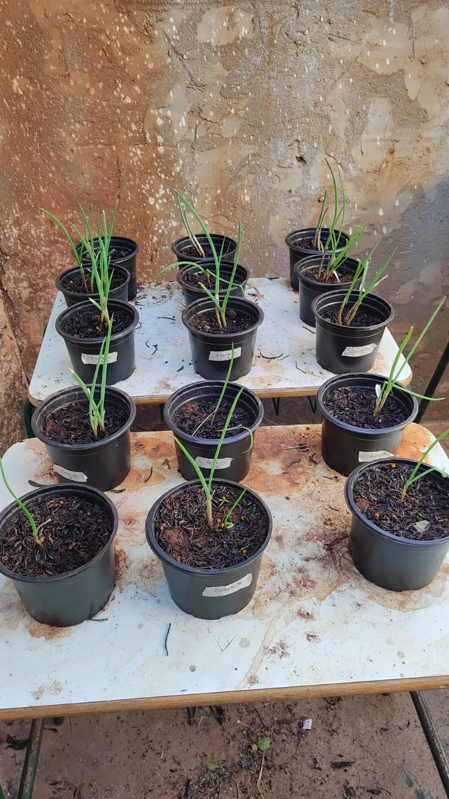

- CEJPC
- Colégio Estadual James Patrick Clark


Análise de desenvolvimento de Cebolinha (Allium fistulosum) em diferentes tipos de adubação 
Allium fistulosum" é uma planta originária da Sibéria, popularmente conhecida como cebolinha comum, é uma cultura perene com folhas cilíndricas e fistulosa.A cultura da cebolinha está presente na culinária e tem uma grande importância nutricional e econômica. A cebolinha verde possui vitamina A, que atua no organismo como antioxidante e fortalece o sistema imunológico. Além disso, possui vitamina C, que ajuda na prevenção de muitas doenças e retarda o envelhecimento e minerais como cálcio, fósforo e a niacina, que estimula o apetite. Sua colheita é de 90 à 120 dias após o plantio, depois disso estão mais suscetíveis a perda de água, acarretando diversas mudanças na aparência, metabolismo e composição da hortaliça com alterações na coloração e qualidade nutricional. Sua propagação vegetativa pode ser feita através de semeadura ou produção de mudas. Sua finalidade nutricional para nós humanos tem benefícios como regulamentação do sono, mobilidade, ajuda a recuperação de informações. É uma planta propagada historicamente através de processo vegetativo, por divisão de touceiras, onde perfilhos são destacados para uso no plantio e, mais recentemente através de mudas provenientes de bandejas.
Resultados e Discuções
O objetivo deste experimento foi analisar a produtividade da cebolinha em diferentes tipos de adubo orgânico como: Húmus de minhoca, carneiro, vaca e galinha Foram utilizadas três repetições para cada tipo de adubo e três repetições utilizadas como controle, ou seja sem adubação. Nas repetições experimentais foram colocadas 360 gramas de terra vermelha e 180 gramas de cada adubo. O monitoramento ocorreu duas vezes por semana com a utilização de uma régua comum durante 4 meses. Foram irrigadas com 200 ml de água para todos os vasos. 1º semana: Foi observado que os vasos com esterco de vaca se desenvolveram melhor crescendo 4 cm por semana.. Húmus cresceu significamente 2 cm. Esterco de carneiro cresceu 3 cm. Esterco de galinha cresceu 2 cm. Grupo controle cresceu 2 cm. Ao longo do experimento algumas amostras sofreram interferência no crescimento devido as mudanças climáticas, mas cresceram gradativamente durante esses meses após o replantio.
Conclusão
Com este experimento concluímos que para o plantio da cebolinha comum é recomendável o uso do esterco bovino.